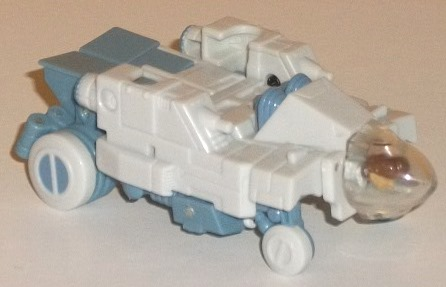
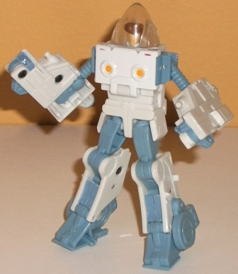
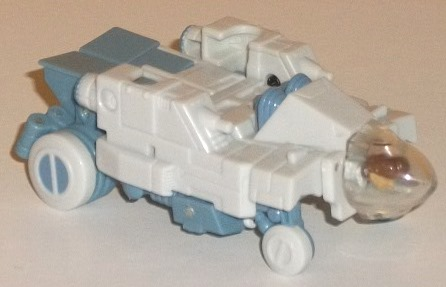
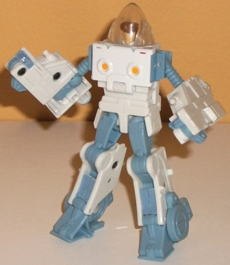
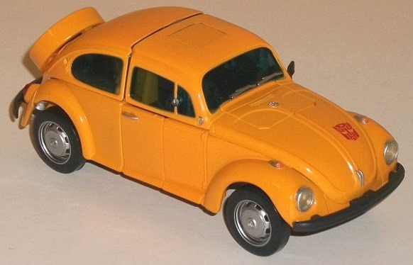
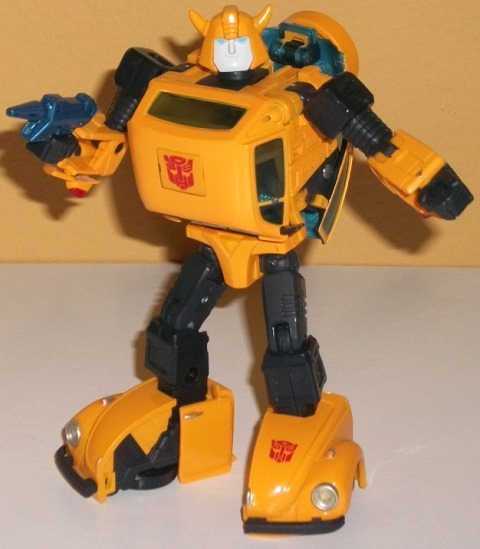

 
Difficulty of Transformation : Medium
Color Scheme : Off-white, light pale grayish blue, and some clear plastic, dark brown, orangish "cheesy" yellow, red, and light fleshy tan
Individual Rating : 8.3
Set Price
: $65 (U.S)
Allegiances
: Autobot
 Spike
Witwicky
Spike
Witwicky


Difficulty of Transformation
: Medium
Color Scheme
: Off-white, light pale
grayish blue, and some clear plastic, dark brown, orangish "cheesy" yellow,
red, and light fleshy tan
Individual Rating
: 8.3
Unlike most reviews,
I'm going to start with Spike's robot mode, since so many of my comments
about the "vehicle mode" are in relation to this mode. As a nice solid
"extra", the smaller figure in this set is Spike Witwicky in his exo-suit,
just like in the '80s movie! The headsculpt is ambiguous enough where you
can say it's Daniel Witwicky, as well-- I'm just going by what the box
says. In "robot" mode, Spike is very cartoon-accurate, with the large forearms
and tiny upper arms spot-on, even if it's a downside for me in terms of
proportions. The hands are also just barely molded into the ends of the
forearm-clumps, which is probably my biggest complaint about this mode.
Otherwise the proportions are both cartoon-accurate AND pleasing to the
eye, and I love that the head is behind a clear plastic rotatable "bubble"
that you can also take right off if you so desire. I also love how the
rear wheels from the vehicle mode fold into the center of the ankles nicely.
The mold detailing is fairly minimal, but this is accurate to the cartoon--
basically he's got a few tech-details here and there like the two yellow
spots on the chest and some paneling here and there, but otherwise his
mold detailing is fairly plain. His color scheme is mostly an off-white
and pale grayish blue-- beyond the yellow dots and tiny red bits on the
chest, all the other colors are on Spike's head and bubble. It's not the
most exciting color scheme in the world, but again it IS accurate, and
the two colors at least contrast against each moderately well, even if
I wish the blue was a bit darker. For articulation, Spike's is adequate--
he can move at the shoulders (which unfortunately pop off rather easily),
elbows, hips, knees, and slightly forwards/backwards at the ankles. I wish
his legs could turn sideways a bit more without popping off their ball
joints, but Spike partially makes up for this by having the head being
able to rotate AND look up on a hinge-- pretty impressive for the scale.
Just like in the movie,
the exosuit can transform into what is essentially a bunch of compressed
stuff on wheels with the head-bubble in place of any sort of cockpit. The
transformation is slightly more complicated than you'd expect, with little
bits folding out from the interior of the chest to mesh with the robot
forearms-- but the end result is quite impressive. Granted, this mode was
always more of a futuristic moon-rover thing that was an afterthought in
the movie, but this toy makes it largely not only accurate to the movie,
but everything fits together remarkably well. The "jetpack" detailing on
the upper back and the blue bits on the lower robot arms also make for
viable thrusters in this mode. The rear wheels are nice and large and formed
from the ankles, while the front wheels are tinier and merely fold out
of the lower robot arms. The top is impressively flat, and everything does
peg together to feel nice and solid-- this latter bit is my biggest rave
about this mode; there's not a bunch of "exosuit junk" hanging off anywhere.
 Bumblebee
Bumblebee


Difficulty of Transformation
: Medium
Color Scheme
: Orangish "cheesy"
yellow, very dark flat blue, transparent blue, and some silver, black,
clear plastic, dark metallic blue, light sky blue, transparent cherry red,
and off-white
Individual Rating
: 9.4
Bumblebee's vehicle mode
is-- finally-- that good ol', "innocent" VW Bug that it was in the original
series. For a long time Volkswagen refused to allow the license for "war
toys", but due to financial issues on their end(?) they finally caved.
Bumblebee's vehicle mode is pretty much spot-on to the '80s VW Bug, as
you'd expect from a licensed alt mode. Proportionally, he's perfect, and
the only robot mode extras as that his lower arms stick out JUST a tad
lower the rest of the vehicle behind the rear wheels, but this is pretty
darned minor at best. Bumblebee also comes with a removable spare tire
accessory, and he looks perfectly fine with or without it. As you'd expect,
Bumblebee's main color in this mode is an orangish yellow, and the transparent
blue goes moderately well with it (plus, the transparent blue is dark enough
where it hides most of the robot bits inside from being easily visible
in this mode). He does have the expected black wheels w/ silver hubs, and
some little details here and there are nicely painted as well-- the silver
headlights and clear main headlights; the transparent cherry red taillights;
one black rear view mirror (as was the case on these cars) the black bumper
pieces on both ends; and even little silver paint apps on the door handles,
windshield wipers, and VW emblem on the front hood. (Unfortunately, unlike
with some Masterpieces, the doors cannot open in this mode.)
Although not exactly
simple, Bumblebee's transformation is relatively modest for a Masterpiece;
the legs extend out and the front wheels 'n such fold around, while the
sides of the vehicle mostly turn inside out; most of the rest is just folding
up minor parts and unfolding the arms and head, then sticking everything
together. The end result is a marvelously accurate G1 Bumblebee-- the only
major detail that doesn't seem to hold up to a general look is that the
top of his hood-chest is a bit more angular than it looked on the cartoon,
but that can be chalked up to the fact he's got a licensed alt mode. The
spare tire-- if left on his back-- can stick out a little too, but again,
it's removable. Bumblebee's proportions are generally very good, though
his arms could stand to be just a TAD bigger. From a side view, his main
body is also just a little "fat" because of the rear hood on the back end,
but this is minor given 'Bee's friendly look and demeanor. (I don't like
that this piece doesn't really lock in anywhere, though at least it's not
loose enough to flop back and forth or anything.) On a more minor note,
there's little taillight pieces underneath his lower arms, though they're
quite small pieces and they actually fold DOWN there instead of sticking
out more in their vehicle position, so I can't fault the designers much
for that. The main new color in this mode that helps break up all that
yellow is black, and-- wait, what? It's actually
not
black? Yeah,
it's kind of weird, it you look at it carefully most of it is actually
a really dark blue, which was kind of an odd choice-- but again, not really
noticeable unless you really look closely. His headsculpt is spot-on G1
cartoon, completely with a rather angular off-white face and light blue
eyes. As you'd expect from a Masterpiece toy, Bumblebee has superior articulation--
he can move at the neck (at two points), shoulders (at three points), elbows,
inwards slightly at the wrists (because of his transformation), waist rotation,
and movement at the hips (at three points), knees, and a bit back-and-forth
and side-to-side at the ankles. He's also excellently balanced so he can
get into a ton of cool poses. As for accessories, Bumblebee comes with
a little metallic blue gun that he can hold easily in either hand and that
stores on the underside of his car mode, and two different faces that you
can switch out; either a "serious" face or a "slightly smiling/happy" face.
The Masterpiece Bumblebee & Spike Witwicky set is a solid purchase for any fans of the character(s), with both toys being remarkably solid and screen-accurate in both modes, as well as being quite articulated. Plus, for the Masterpiece line, the price ($65) is definitely more expensive than most TFs, but nonetheless at an "entry" pricepoint for this expensive line-- thus, if you're considering collecting the MP line, this might be a good "test figure" to see if you think the improved articulation, complicated transformations, etc., are worth the price. Highly recommended.
No Stats
Reviews by Beastbot